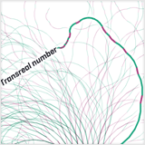

As Doc Searls recently put it, Wikipedia is, like the protocols of the Net, "a set of agreements". A Web protocol defines the way in which computers communicate with each other and make decisions to ensure successful transactions. Wikipedia policies have the same purpose, but instead of transactions between machines, they regulate human decisions. An important part of these decisions bear on what topics are suitable for inclusion in Wikipedia and what topics are not. The present project looks into the nature and shape of collective decisions about the inclusion of a topic in Wikipedia.
Like a garden, a curated encyclopedia makes some weeding necessary. All articles, especially new ones, are closely reviewed by the community to determine if they meet Wikipedia's notability guidelines. Any editor can nominate an article for deletion and, if this nomination is legitimate, a community discussion takes place where any fellow gardeners editors have the opportunity to make their voices heard. The usual process is to have a week-long discussion during which community members can discuss in favor or against keeping the article. At the end of this period an administrator reviews the discussion and speaks the final verdict.
We analyzed and visualized such Article for Deletion (AfD) discussions. The visualization above represents the 100 longest discussions that resulted in the deletion of the respective article. AfD discussions are represented by a thread starting at the bottom center. Each time a user recommends to keep, merge, or redirect the article a green segment leaning towards the left is added. Each time a user recommends to delete the article a red segment leaning towards the right is added. As the discussion progresses, the length of the segments as well as the angle slowly decay.

|
 | |
| Controversial | Swinging | Unanimous |
|---|---|---|
| Particularly controversial discussions where Deletes and Keeps alternate tend to follow a straight line as opposing opinions balance each other and consensus is hard to reach. | Discussions follow an s-shaped trajectory when a series of Deletes is followed by a consistent series of Keeps or vice versa. This pattern may indicate that participants with similar opinions flock together and join the discussion at the same time. | Unanimous discussions tend to get curly. An ideal discussion in which there is a total agreement among participants will approximately look like a logarithmic spiral. |
The following visualization represents the 100 longest discussions that did not result in the deletion of the article (i.e the article was kept, merged or redirected):
Long AfD discussions are exceptional and not all AfD discussions are as crowded as those represented above. The longest AfD discussions do not give a representative picture of how this process works in most cases. The analysis of a large sample of AfD discussions (198,083 discussions that took place between November 2002 and July 2010) suggests that the largest part of these discussions ends after only a few recommendations are expressed.
Splitting up the chart by the outcome of the discussion, and the vote distribution, reveals some interesting facts:


More analyses of Wikipedia's AfD discussions can be found in:
D. Taraborelli, G.L. Ciampaglia (2010) Beyond Notability. Collective Deliberation on Content Inclusion in Wikipedia. Fourth IEEE International Conference on Self-Adaptive and Self-Organizing Systems Workshops (SASOW '10). [PDF]
This project is the result of a collaboration between Dario Taraborelli, Giovanni Luca Ciampaglia (data and analysis) and Moritz Stefaner (visualization).
The interactive visualizations were built with Flash, Flare and FDT. The static charts were produced with Tableau. A dataset with the 500 longest AfD discussions in Wikipedia as of July 2010 is freely available on Google Docs.
Questions? Suggestions? Get in touch: team [ät] notabilia [döt] net